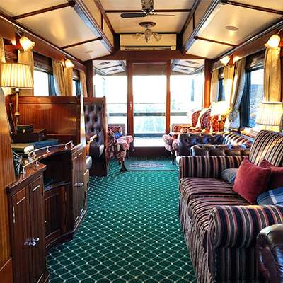
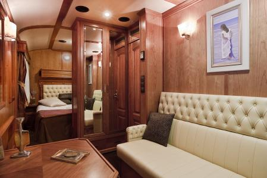

Safaris de Lujo y Opulentos
Nuestros Safaris de Lujo y Opulentos representan la excelencia de los destinos de safari, ofreciendo estancias en los hoteles, campamentos y lodges de safari más exclusivos y ubicaciones más exquisitas.

Los precios de nuestros Safaris de Lujo comienzan a partir de 1200€ por persona por noche. Sin embargo, en destinos como Botswana, el precio puede ser significativamente superior.
Safaris Boutique
Nuestros Safaris Boutique encapsulan la perfecta armonía entre comodidad y lujo. Disfruta de alojamientos seleccionados minuciosamente, que incluyen hoteles boutique, campamentos y lodges.
Los precios para un Safari Boutique oscilan entre 1000€ y 1500€ por persona por noche, excluyendo vuelos internacionales.
Safaris Clásicos
Nuestros Safaris Clásicos representan la perfecta armonía entre comodidad y lujo. Disfruta de tu estancia en hoteles boutique, campamentos y lodges cuidadosamente seleccionados.
Los precios de nuestros Safaris Clásicos oscilan entre 600€ y 800€ por persona por noche, excluyendo vuelos internacionales.